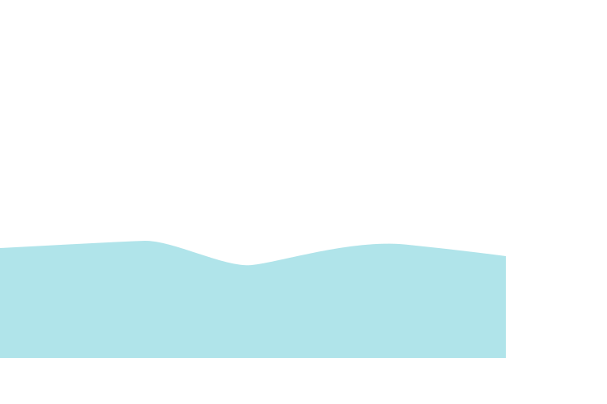
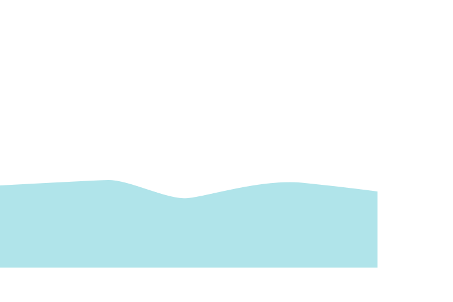
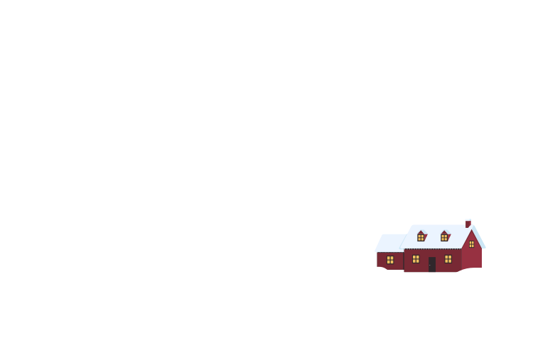
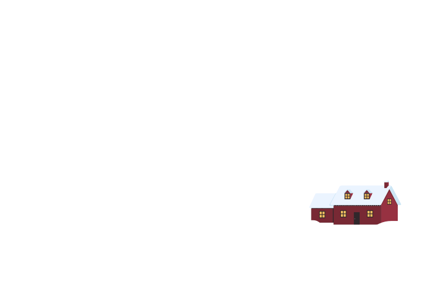

- Le renne des neiges -
par Clémence T.


 

 


Il était une fois, dans un endroit que nous connaissons tous, un petit renne nommé Rudolph. Il aimait beaucoup gambader du château du père Noël jusqu’à la forêt enchantée. Il se distinguait des autres rennes par son nez rouge qui scintillait tel une étoile dans la nuit. Aux yeux des gens, ce nez était charmant, mais, en réalité, il complexait beaucoup notre ami.

Un jour, il s’aventura plus loin qu’à son habitude dans la forêt. Peu à peu, la nuit commença à tomber. Rudolph, perdu et effrayé, se mit à penser : “Quelle idée ai-je eu de partir si loin, jamais plus je ne reverrais les miens.”
Le père Noël, inquiet de ne pas voir son renne préféré rentrer, décida de partir à sa recherche. Il s'enfonça dans la forêt. Sans relâche il criait le nom de notre ami. Plus il avançait et moins il y voyait. Si bien qu’au bout d’un moment l’obscurité l’avait emporté. Rudolph entendit son nom au loin. L’espoir qui le gagna était si fort qu’il fit scintiller son nez. Cette lueur perça l’obscurité ce qui permit au Père Noël de le retrouver.
De retour chez eux, petit renne et le Père Noël se réchauffèrent au coin du feu. C’est alors que Rodolph se dit qu’il n’avait jamais était aussi heureux d’avoir un nez lumineux.